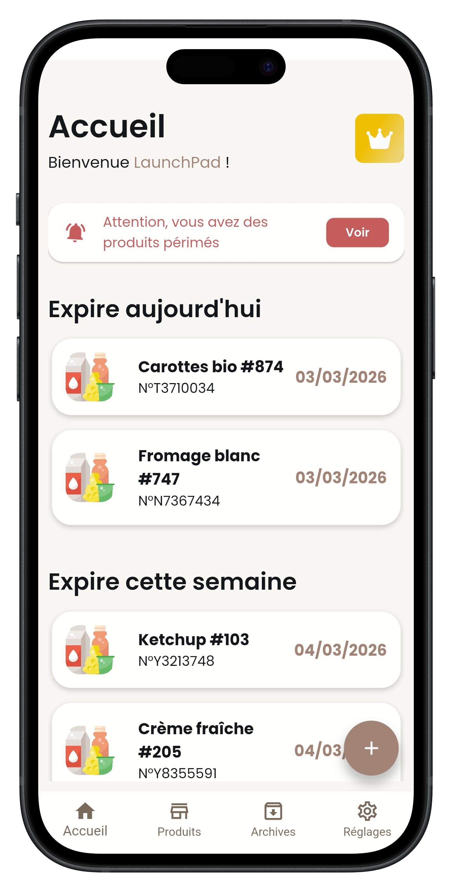
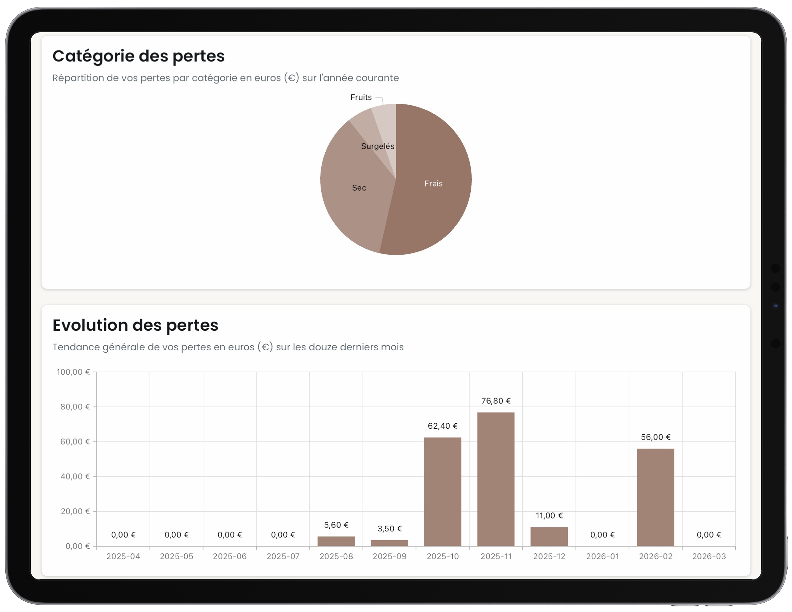

En France, toute épicerie fine doit pouvoir attester d'une traçabilité impeccable des dates limites de consommation de ses produits en rayon. En cas de contrôle, pas de marge d'erreur — et surtout, jamais de produit périmé vendu au client.
Pourtant, dans la grande majorité des commerces de bouche indépendants, ce relevé est encore tenu à la main, sur des carnets ou dans des tableurs Excel qui s'allongent à chaque livraison. Le résultat est connu : du temps grignoté chaque jour, un risque d'erreur permanent, et des marges qui finissent silencieusement à la poubelle.
C'est dans cette zone d'ombre du quotidien d'épicier qu'est née Traceo.

La contrainte qu'on n'évite pas.
Tenir l'historique de ses DLC n'est pas un luxe d'organisation, c'est une obligation réglementaire. Mais sur le terrain, l'obligation se traduit en gestes répétitifs : recopier une date, la chercher dans un fichier, vérifier un lot, raturer une ligne, passer à la livraison suivante.
Chacun de ces gestes, pris isolément, ne pèse rien. Mis bout à bout sur une semaine, ils représentent plusieurs heures que le gérant ne passe pas en rayon, ni avec ses clients, ni à imaginer la prochaine animation de sa vitrine. Et plus le suivi est manuel, plus il est fragile : oublis, doublons, lignes obsolètes — autant de failles dans la traçabilité censée protéger le commerce.
Le coût caché n'est pas seulement administratif. Sans visibilité sur les dates critiques, les invendus s'accumulent. Un fromage oublié quelques jours, un lot de surgelés mal suivi, une promotion lancée trop tard : à chaque fois, c'est de la marge nette qui disparaît, sans qu'on puisse même la quantifier après coup.
Un brief, presque banal.
Tout commence par une conversation. Un de nos clients, gérant d'une épicerie fine indépendante, formule une demande simple — celle qu'on entend dans la moitié des commerces qu'on visite, à un mot près :
J'aimerais un outil léger, très intuitif et efficace pour renseigner mes produits, automatiser la gestion de mes DLC, et quantifier mes pertes liées à la péremption.
— Le gérant d'une épicerie fine indépendante
Trois verbes : renseigner, automatiser, quantifier. Aucun jargon, aucune fonctionnalité demandée. Juste une intention. C'est exactement le type de brief que nous aimons, parce qu'il laisse toute la place à la conception et nous oblige à aller chercher la réponse là où elle est : derrière le comptoir, à la réception des livraisons, devant le rayon frais à 18 h un jeudi soir.
Nous avons cadré le besoin sur place, avec l'équipe. Conçu un parcours minimal — scanner, alerter, archiver — pour qu'un nouvel employé puisse être autonome en moins de dix minutes. Un premier prototype a été testé en conditions réelles dès la troisième semaine, et ajusté au fil des retours.
Trois gestes, et plus rien à recopier.
L'application tient sur trois moments du quotidien d'épicier. Pas de paramétrage interminable, pas de tableau de bord à dompter avant de l'utiliser : Traceo veut être ouvert et refermé en quelques secondes, plusieurs fois par jour.
-
Scanner
À la réception, on scanne le code-barres et on renseigne la DLC. Le produit est référencé en quelques secondes : nom, lot, fournisseur, photo, date. Le carnet de réception, lui, reste fermé.
-
Être alerté
Chaque catégorie a son seuil : J-3 sur le frais, J-15 sur l'épicerie sèche, ce que l'on veut. L'application notifie au bon moment — ni trop tôt pour ne pas créer du bruit, ni trop tard pour pouvoir encore agir.
-
Valoriser
D'un coup d'œil, on identifie les sur-stocks et les lots à écouler. On lance une promo ciblée, on met un rayon en avant, on récupère la marge qui serait partie à la poubelle.
Sous cette mécanique simple se cache un inventaire complet, multi-utilisateurs, qui se met à jour en temps réel sur chaque appareil de la boutique. Voici, sans bruit, ce que l'application embarque concrètement.
-
Scan code-barres
Lecture rapide depuis le mobile, sans matériel additionnel. Les produits déjà référencés sont reconnus automatiquement.
-
Inventaire centralisé
Une fiche par produit — nom, lot, fournisseur, photo, DLC. Toute la boutique consultable d'un seul écran, à jour en temps réel.
-
Alertes paramétrables
Seuils de notification définis par catégorie de produit, ajustables à tout moment selon la saison ou la rotation.
-
Multi-utilisateurs
Chaque collaborateur dispose de son accès, scanne et met à jour depuis son propre appareil.
-
Archives & statistiques
Historique des invendus et remises, répartition des pertes par catégorie, évolution sur douze mois glissants.
-
Mobile et tablette
Disponible sur iOS et Android, accessible partout en boutique. Prise en main en moins de dix minutes.
Plus qu'une app de scan : un levier de marge.
Si Traceo se résumait à transformer un carnet en application, il n'aurait qu'un intérêt limité : l'épicier gagnerait du temps, sans gagner d'argent. La vraie bascule se joue ailleurs. En centralisant l'information sur les dates et les stocks, l'application transforme une contrainte réglementaire en lecture commerciale — et c'est là que la marge se récupère.
Opérations commerciales
Identifier facilement les sur-stocks ou les DLC approchantes pour lancer des promotions au moment parfait, sur les bons produits — et non au hasard.
Animation vitrine
Mettre en avant les bons produits au bon moment, faire vivre les rayons, transformer une perte potentielle en vente impulsive.
Réduction des pertes
Quantifier la valeur exacte des invendus pour ajuster les achats, négocier les commandes et maximiser la marge sur la durée.
Cette lecture stratégique repose sur un tableau de bord pensé pour les gérants : lisible en trente secondes, exploitable immédiatement. Répartition des pertes par catégorie sur l'année, évolution mensuelle sur douze mois, vue par lot et par fournisseur. Pas de graphique gratuit, pas d'indicateur cosmétique : ce qui est affiché doit pouvoir déclencher une décision.

Ce que ça change, concrètement.
Quelques semaines après le premier prototype, l'application était disponible sur les stores. Aujourd'hui, elle est utilisée par plus de cinquante épiceries fines en France — toutes parties du même besoin de départ.
- −15 min
- par jour gagnées sur la gestion des relevés DLC, à boutique équivalente.
- −30%
- jusqu'à, sur les pertes liées aux invendus, en anticipant les dates critiques.
- 100%
- de traçabilité conforme, prête à être présentée en cas de contrôle.
Estimations sur la base des retours utilisateurs et de l'analyse de cas types en épicerie fine indépendante.
Au-delà des chiffres, ce que disent les utilisateurs revient souvent au même : ils ne réfléchissent plus à leurs DLC. Le suivi est devenu un automatisme léger, intégré au flux de la journée. Et l'attention qu'ils consacraient au carnet a glissé là où elle a le plus de valeur : sur les rayons, et avec les clients.
Étude de cas : du premier client au produit.
Plusieurs heures par semaine, sur du papier.
Le gérant suivait ses DLC sur un classeur papier doublé d'un fichier Excel. Entre les livraisons hebdomadaires, les rotations rapides du frais et la pression réglementaire, le suivi prenait du temps et restait fragile : oublis, doublons, lignes obsolètes.
Trois verbes, aucune fonctionnalité.
« Renseigner, automatiser, quantifier. » Le brief n'imposait rien, ni écran, ni techno, ni feature précise. Juste une intention, formulée du point de vue du métier, pas de l'outil.
Cadrer en boutique, pas en réunion.
Observation sur place, à la réception et en rayon. Conception d'un parcours minimal — scanner, alerter, archiver — et premier prototype testé en conditions réelles dès la troisième semaine, ajusté au fil des retours.
Un outil né d'un besoin, devenu un produit.
Quelques semaines plus tard, l'application était en boutique. Le bouche-à-oreille a fait le reste : d'un client unique, Traceo est devenu l'outil quotidien de plus de cinquante épiceries fines en France.
- heures → minutes le relevé DLC, passé d'un travail hebdomadaire à un geste quotidien.
- visibilité claire sur les lots à écouler et la répartition des pertes par catégorie.
- +50 épiceries utilisent aujourd'hui Traceo en France, à partir de ce premier déploiement.
LaunchPad
Un outil métier qui vous manque ?
Traceo est né d'une conversation. Si vous portez vous aussi une idée d'outil, d'application ou de site sur mesure, on aimerait en entendre parler.
Découvrir nos services